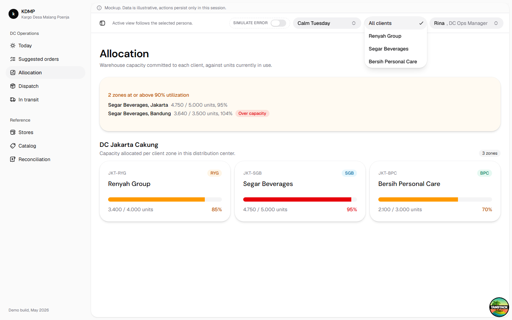
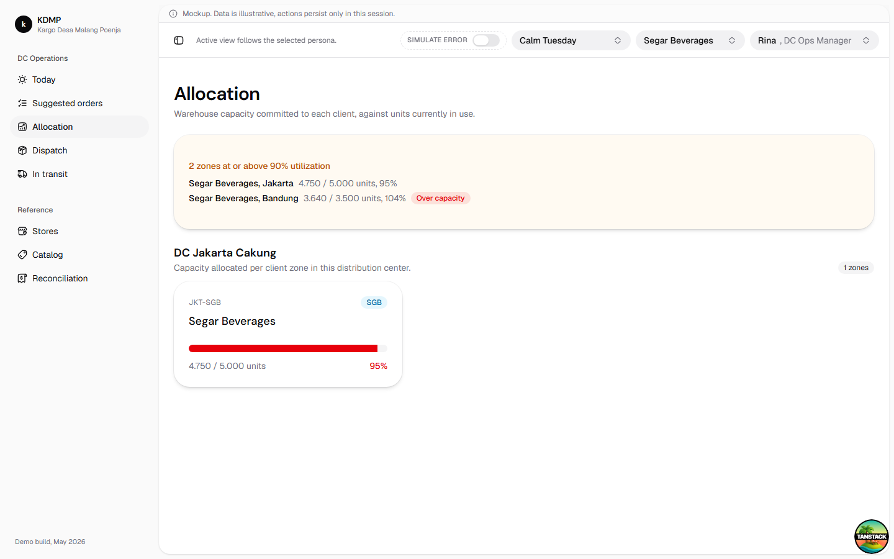
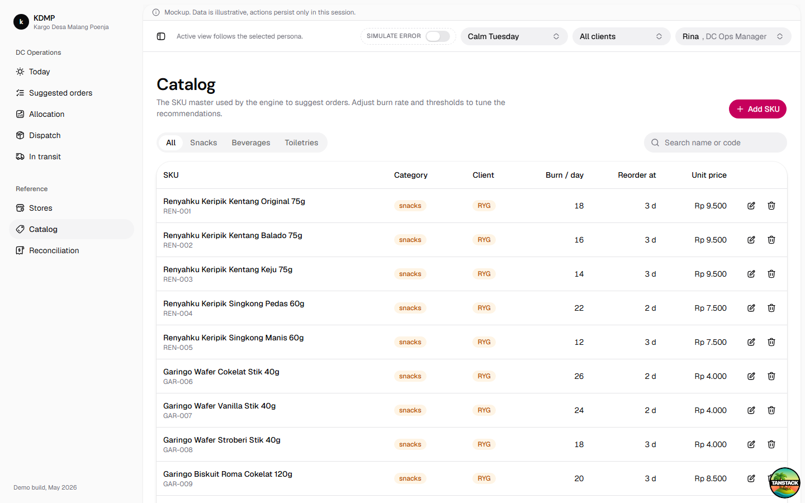
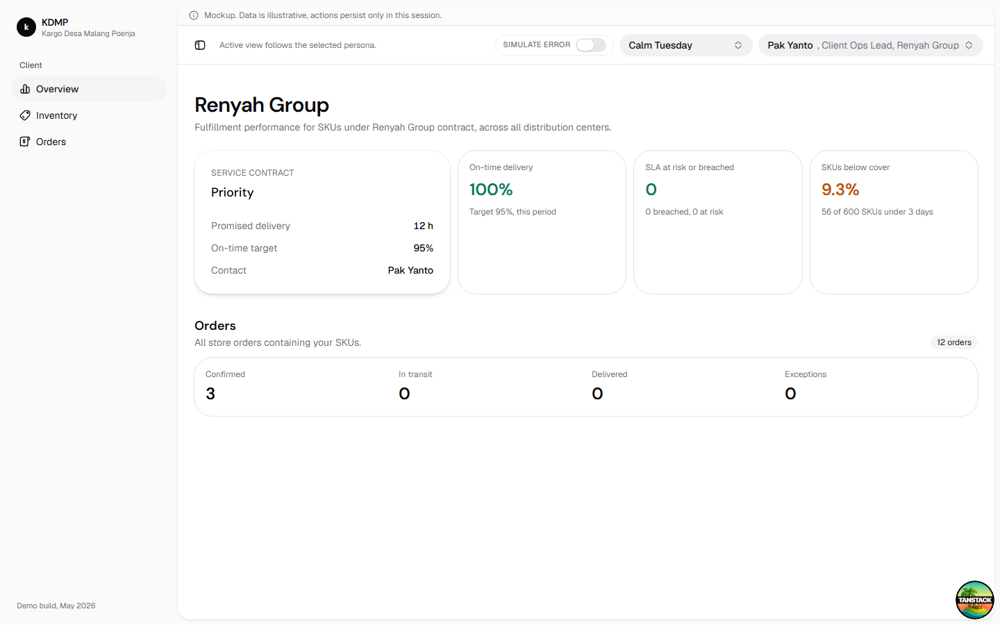
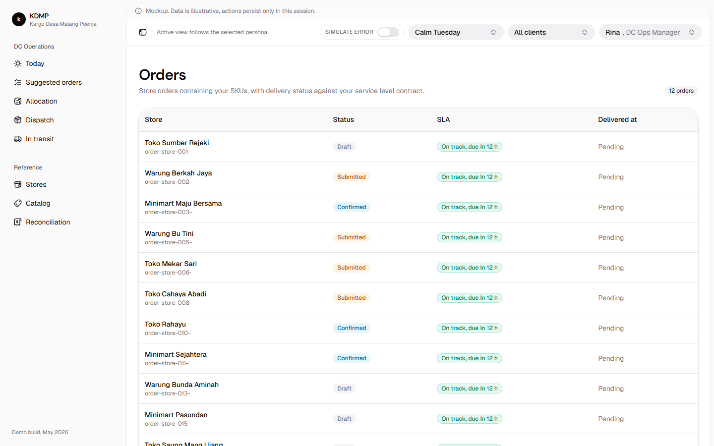
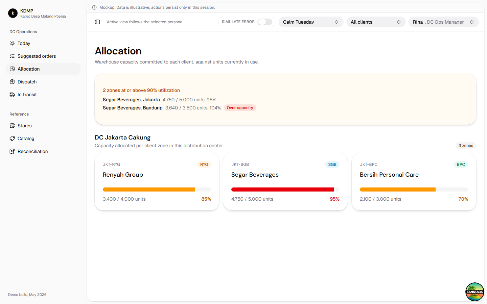

Terjemahan tantangan desain untuk platform 3PL multi-tenant (gudang yang melayani beberapa brand,
gaya operasi seperti Ninja Van, J&T Express, dan DHL Supply Chain), dipetakan ke status
implementasi pada mockup KDMP saat ini (branch main, setelah commit
776f8a0).
Challenge 1
Ada TenantSwitcher (src/components/shared/tenant-switcher.tsx) yang
ditempatkan satu kali di top bar global (__root.tsx), berdampingan dengan
RoleSwitcher dan ScenarioSelector. Satu komponen ini mengatur
currentTenantScope di store global untuk semua halaman ops-manager, supervisor,
dan exec, tanpa perlu navigasi atau dropdown terpisah di setiap halaman.
Pencegahan kebocoran data ditangani lewat lib/permissions.ts: fungsi
canSwitchTenant membatasi siapa yang boleh berganti tenant (ops-manager,
supervisor, exec), sedangkan assertTenantAccess mengunci persona "client" hanya
ke client_ids miliknya sendiri. Jika tenant scope tidak cocok, route
/client/* menampilkan EmptyState "Access restricted" bukan data
klien lain.
Update: sebelumnya, memilih klien di TenantSwitcher tidak
terlihat efeknya di halaman Catalog dan Allocation karena kedua halaman itu belum membaca
currentTenantScope. Sekarang src/routes/catalog.tsx dan
src/routes/allocation.tsx sudah ikut memfilter datanya: memilih "Segar
Beverages" mengecilkan daftar SKU di Catalog dari 75 jadi sekitar 25 baris (kategori
beverages saja), dan mengecilkan kartu zona di Allocation dari 3 zona menjadi 1 zona
(JKT-SGB). Memilih "All clients" mengembalikan tampilan ke seluruh data lagi. Halaman
In transit dan Reconciliation sengaja tidak difilter karena workflow "close day"-nya butuh
melihat semua order lintas klien sekaligus.


Challenge 2
Setiap entitas inti, SKU, zona gudang, alokasi kapasitas, dan estimasi stok, kini punya
client_id di src/mocks/types.ts (SKU,
WarehouseZone, InferredStock). Kepemilikan ini ditampilkan secara
seragam lewat komponen ClientBadge
(src/components/shared/client-badge.tsx), yang menunjukkan kode klien dengan
warna sesuai kategori (snacks, beverages, toiletries).
Badge ini dipakai di halaman Catalog (per baris SKU), halaman Allocation (per kartu zona gudang), dan halaman Supervisor (per order/exception). Jadi siapa pun yang melihat satu unit inventori atau satu order langsung tahu klien mana pemiliknya, tanpa perlu membuka halaman lain.

Challenge 3
Ada persona baru "Pak Yanto, Client Ops Lead" dengan route group
/client (client/index.tsx, client/inventory.tsx,
client/orders.tsx), masing-masing sebagai "Overview", "Inventory", dan "Orders"
di sidebar-nya sendiri. Halaman-halaman ini memakai ulang komponen yang sama dengan sisi DC:
Card, Table, Badge, OrderStatusBadge,
SLABadge, dan ClientBadge, hanya datanya difilter ke klien yang
relevan lewat selectOrdersForClient dan selectInferredStockForClient.
Batas izin diterapkan di client/route.tsx (ClientLayout): jika
currentTenantScope bukan klien yang terkunci untuk user "client", halaman
menampilkan EmptyState "Access restricted" dan tidak merender <Outlet/>
sama sekali, jadi tidak ada data klien lain yang ter-render meski sempat ter-fetch.

Challenge 4
Tiap klien punya kontrak SLA (SLAContract: tier standard/priority/express,
promised_delivery_hours, target_on_time_pct) di
src/mocks/fixtures/sla-contracts.ts. Selector selectOrderSLA menghitung
status order: on_track, at_risk, atau breached, lengkap dengan
waktu jatuh tempo, dan ditampilkan lewat komponen SLABadge dengan warna sesuai status
(hijau, kuning, merah).
SLA-aware prioritization sudah ada di halaman Supervisor: selectOrdersBySLAUrgency
mengurutkan order/eksepsi berdasarkan urgensi SLA, sehingga order yang berisiko breach SLA
ditampilkan lebih dulu kepada supervisor. Di sisi client, halaman Orders menampilkan
SLABadge per order, dan Overview menghitung KPI "On-time delivery" serta
"SLA at risk or breached" terhadap target kontrak.

Challenge 5
Ditambahkan tipe data baru WarehouseZone (zona gudang per DC, dimiliki satu
klien) dan CapacityAllocation (allocated_units vs
used_units per zona), dengan fixture di
src/mocks/fixtures/warehouse-zones.ts dan
src/mocks/fixtures/capacity-allocations.ts.
Halaman baru /allocation menampilkan kartu per zona dengan progress bar
utilisasi (hijau di bawah 70%, kuning 70-90%, merah di atas 90% atau over-capacity), serta
banner peringatan untuk zona yang mendekati atau melewati kapasitas. Halaman ini berdiri
sebagai item navigasi baru "Allocation" di grup "DC Operations", berdampingan dengan
"Suggested orders" yang sudah ada sebelumnya, jadi ops-manager punya dua sudut pandang:
permintaan replenishment per SKU (suggested orders) dan kapasitas fisik per klien
(allocation).

Lima area teknis yang diminta, dan status implementasinya di mockup.
client_id ada di SKU, WarehouseZone, dan
InferredStock; currentTenantScope sebagai state global untuk
memfilter data lintas halaman.
Fixture Client (nama, kode, kategori, kontak) plus komponen
ClientBadge yang dipakai ulang di Catalog, Allocation, Supervisor, dan
Client Orders.
SLAContract per klien (tier, jam pengiriman, target on-time) plus selector
selectOrderSLA dan selectOrdersBySLAUrgency untuk status dan
prioritas SLA.
src/lib/permissions.ts: canSwitchTenant,
canConfirmOrders, canDispatchWave, canEditCatalog,
dan assertTenantAccess untuk kunci tenant per role.
WarehouseZone dan CapacityAllocation sebagai entitas baru,
dirender di halaman /allocation dengan indikator utilisasi dan peringatan
over-capacity.
Kelima design challenge dan kelima technical consideration sudah punya representasi konkret di
kode (commit 85e6a83 "refactor kdmp into multi-tenant 3PL platform" dan
5131d5f "add tenant scoping, SLA badges, and RBAC to 3PL surfaces"). Karena ini
mockup frontend-only dengan data mock, "SLA configuration engine" dan "tenant-based data
model" diwujudkan sebagai tipe data, fixture, dan selector murni di sisi klien (bukan service
backend terpisah), sesuai batasan proyek di CLAUDE.md.